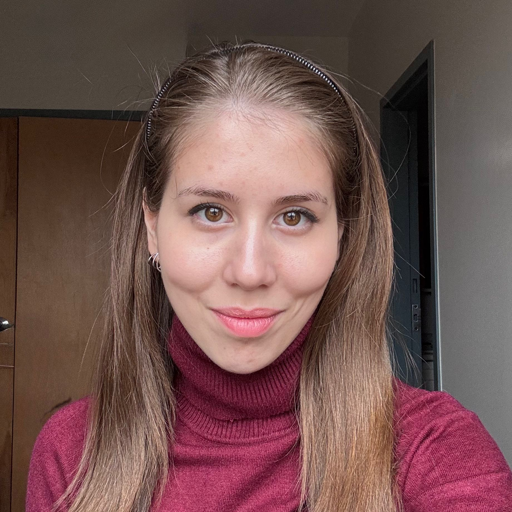

I design and deliver research-grade AI — from quantum ML pipelines to neuromorphic edge systems — and translate technical complexity into decisions, products, and people who ship.

Focused on ownership, delivery, stakeholder translation & curriculum design
I'm a final-year AI student with a rare blend of deep technical literacy and proven leadership. I've designed and delivered research-grade AI systems end-to-end — from requirements and architecture through to validation and stakeholder communication — mirroring the full product lifecycle.
Business-educated at ESADE, multilingual across three languages, and experienced founding and leading organisations from scratch. I've taught AI to nine-year-olds and presented quantum ML findings to research panels — the translation skill is the same.
Languages
Owned a full research project from problem scoping to delivery. Defined success metrics, designed a hybrid quantum-classical recommendation pipeline, and validated outcomes across 32M+ user ratings (MovieLens, Amazon Reviews). Managed competing constraints — NISQ circuit feasibility, dataset scale, statistical rigour — making trade-off decisions analogous to PM prioritisation under resource limits.
Documented seven engineering failure modes with formal mitigations, building a structured risk register that demonstrated proactive problem ownership.
Defined scope and success criteria for a dual-task medical AI system: CFTR genetic variant classification and lung imaging diagnostics. Balanced clinical utility against computational constraints across three model architectures, drawing actionable conclusions to guide architecture decisions.
Designed curriculum from scratch for students aged 9–15, adapting content for neurodivergent learners. Translated complex algorithmic concepts into accessible, engaging lessons — the same translation skill PMs use with engineers, executives, and customers. Also delivered introductory AI content to adult learners in community contexts.
Coordinated resource delivery across underserved communities, streamlined workflows to improve operational reach. Early experience managing cross-functional delivery under real constraints with real stakes.
Hybrid quantum-classical recommendation pipeline evaluated on MovieLens 32M and three Amazon Reviews domains. Fidelity-kernel quantum clustering with trainable fusion kernels, QUBO-based latent feature selection reducing circuit depth ~46% while retaining 85% variance. Rigorous statistical validation across 140+ comparisons.
Spiking Neural Networks applied to CFTR genetic variant classification and lung X-ray fibrosis detection. Developed a Functional Disruption Index mapping variants to neuromorphic perturbation signatures. Full pipeline validated on Raspberry Pi for portable clinical deployment.
LSTM-based exercise grading with automatic video segmentation to isolate movement phases. Trained on joint-keypoint data and deployed via REST API and Gradio interface. Led AI model development and system integration from scratch.
Local LLM assistant with semantic retrieval, iterated across multiple architectures including Semantic Kernel, Azure Foundry, and Ollama. Designed prompt templates measurably reducing hallucinations and improving answer relevance. SQL generation and analytics dashboard included.
Generative AI pipeline integrating four AI subsystems: text generation, image synthesis, RAG, and embeddings. Built the model architecture and the full backend, coordinating components across the system — much like coordinating teams across a product.
End-to-end ML pipeline on Azure Cloud classifying brain MRI scans into Alzheimer's subtypes. Full MLOps implementation including training, deployment, and monitoring infrastructure.
Pose estimation project focused on real-time body keypoint detection and analysis. Applied computer vision techniques to human movement tracking and classification.
Designing curriculum is product work. You define user needs, prototype content, gather feedback, and iterate. I've done this for learners across a 30-year age range — from nine-year-olds encountering their first algorithm to adult communities exploring AI for the first time.
Designed and delivered a full curriculum from scratch. Adapted materials for neurodivergent learners — prioritising clarity over cleverness. Topics: algorithms, debugging, basic ML concepts, creative coding. Run as independent self-employed instructor, Sep 2024 – Dec 2025.
Delivered introductory AI and tech content to adult audiences through ESN events, community workshops, and peer contexts at Howest. Focused on demystifying LLMs, prompt thinking, and practical AI tools for non-technical participants.
Volunteer mentor at ADFABER for Technovation Girls programme. Guided young women through ideating, scoping, and building technology products for social impact — part product thinking, part confidence-building.
Organisational leadership, event coordination, member management across an international student community.
Coaching girls to build technology products for social impact — combining product thinking and confidence-building.
Professional development programme focused on building a career in the technology industry.
Built a community STEAM initiative from zero — from concept through to event organisation and public speaking.
Founded and trained a competitive debate programme, developing structured argumentation and critical thinking skills.
Business education programme. Recognised for leadership potential among an international cohort of students.
Major: Artificial Intelligence. Thesis: Neuromorphic Computing for Cystic Fibrosis Diagnosis — dual-task SNN system deployable on edge hardware. Graduation expected June 2026.
Intensive business programme. Awarded the Young and Talented Award for demonstrated leadership potential.
I'm graduating in June 2026 and actively looking for PM or AI research roles where technical credibility, structured thinking, and people skills create real product impact. Open to relocation.
Send me an email →